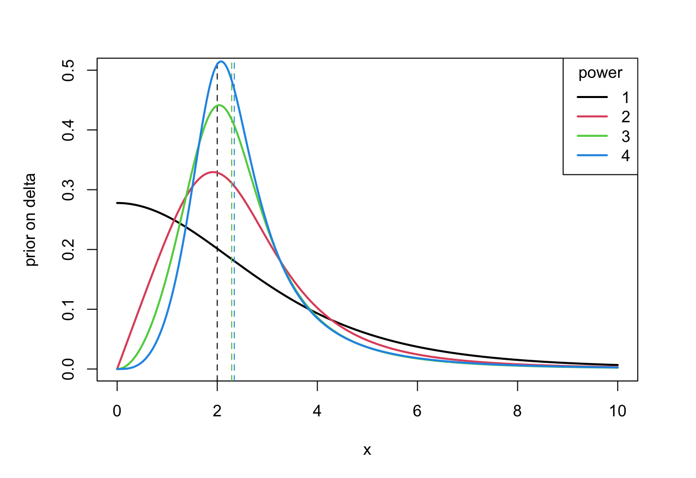
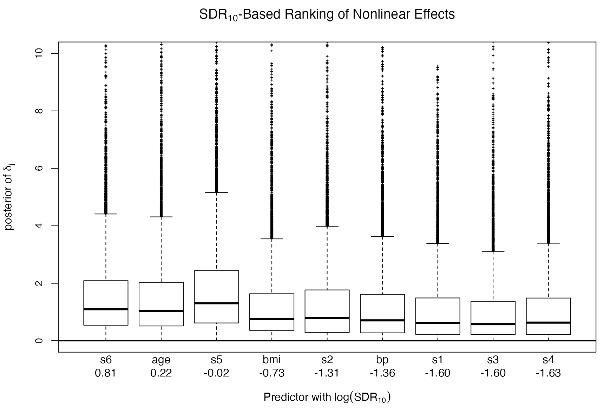
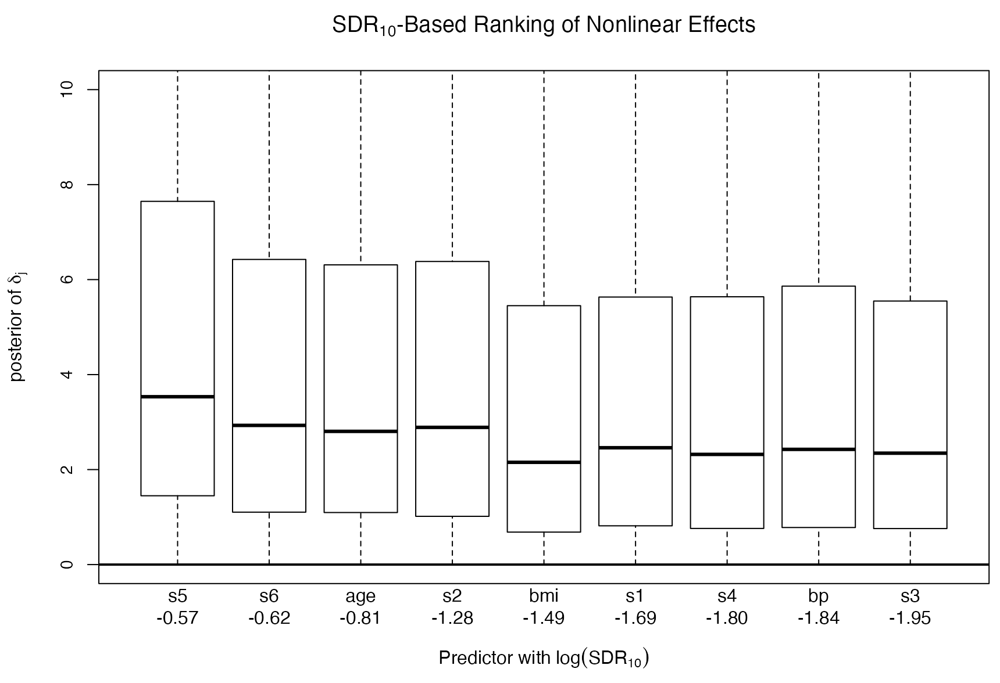

| Prior | prior at 0 | post at 0 | SDR | Median delta | Median lambda |
|---|---|---|---|---|---|
| p1 | 0.2777778 | 0.347 | 0.8 | 1.003251 | 0.353345 |
| p2 | 0.1135783 | 0.194 | 0.58 | 1.619352 | 0.3992331 |
| p3 | 0.05305165 | 0.148 | 0.36 | 1.863093 | 0.4230877 |
| p4 | 0.0235709 | 0.070 | 0.33 | 2.014852 | 0.4348687 |
| \(\delta \sim t^+(df=4,s=2.7)\) | \(\delta^2 \sim t^+(df=1.5,s=6)\) | \(\delta^3 \sim t^+(df=1,s=12)\) | \(\delta^4 \sim t^+(df=0.7,s=25)\) | |
|---|---|---|---|---|
| Q50 | 1.9999 | 2.2881 (14.41%) | 2.2894 (14.48%) | 2.3405 (17.03%) |
| Q90 | 5.7560 | 4.7150 (18.09%) | 4.2315 (26.49%) | 4.2931 (25.42%) |
| Q99 | 12.4311 | 10.3403 (16.82%) | 9.1413 (26.46%) | 9.7732 (21.38%) |
| Tail | -5.000 | -4.000 | -4.000 | -3.800 |

N = 50, range(x) = 1, delta=0.5, lambda=0.3, sigma=0.1, 10th| Prior | prior at 0 | post at 0 | SDR | Median delta | Median lambda |
|---|---|---|---|---|---|
| p1 | 0.2777778 | 0.347 | 0.8 | 1.003251 | 0.353345 |
| p2 | 0.1135783 | 0.194 | 0.58 | 1.619352 | 0.3992331 |
| p3 | 0.05305165 | 0.148 | 0.36 | 1.863093 | 0.4230877 |
| p4 | 0.0235709 | 0.070 | 0.33 | 2.014852 | 0.4348687 |
N = 50, range(x) = 1, delta=3, lambda=0.3, sigma=0.1, 1st| Prior | SDR | Median delta | Median lambda |
|---|---|---|---|
| p1 | 7.56e+02 | 2.31 | 0.41 |
| p2 | 60.81 | 2.28 | 0.40 |
| p3 | 4.19566 | 2.250076 | 0.40 |
| p4 | 0 | 2.28 | 0.41 |
| prior at 0 | post at 0 (SDR10) | 0.9 | 0.8 | 0.7 | 0.6 | |
|---|---|---|---|---|---|---|
| p1 | 0.2777778 | 0.000367 (756.3239) | 0.000389 (714.6245) | 0.000793 (350.2573) | 0.001092 (254.2482) | 0.000638 (435.6454) |
| p2 | 0.1135783 | 0.0019 (60.81384) | 0.0031 (37.0008) | 0.0049 (23.01086) | 0.0037 (30.41612) | 0.0085 (13.37891) |
| p3 | 0.05305165 | 0.01264 (4.19566) | 0.0027 (19.80992) | 0.0029 (18.40702) | 0.0050 (10.55508) | 0.0039 (13.70944) |
| p4 | 0.0235709 | Inf (0) | 0.0027 (8.628321) | 0.0032 (7.405106) | 0.0141 (1.673175) | 0.0163 (1.445878) |
Nonlinear SDR (p1 vs p2)
p1 p2
age 1.30 0.445
bmi 0.48 0.225
bp 0.26 0.159
s1 0.20 0.184
s2 0.27 0.277
s3 0.20 0.142
s4 0.19 0.165
s5 0.98 0.567
s6 2.20 0.538Linear SDR (p1 vs p2)
p1 p2
age 4.6e-02 4.25e-02
bmi 2.1e+06 9.0e+06
bp 1.3e+02 1.48e+02
s1 1.2e+00 1.34e+00
s2 8.7e-01 1.01e+00
s3 3.7e-01 4.04e-01
s4 1.6e-01 1.67e-01
s5 1.8e+00 1.51e+00
s6 6.6e-02 6.58e-02Posterior: p1 — delta

Posterior: p2 — delta^2

Nonlinear SDR (p1 vs p2)
p1 p2
crim 3.15e+01 1.56e+01
zn 2.75e-01 4.93e-01
indus 8.58e+01 7.59e+00
nox 1.14e+05 8.63e+02
rm 3.54e+04 2.74e+02
age 1.51e-01 2.62e-01
dis 9.24e+03 1.15e+03
tax 1.17e+04 6.45e+02
ptratio 2.31e-01 3.85e-01
black 5.05e-01 7.15e-01
lstat 2.85e+03 1.24e+03Linear SDR (p1 vs p2)
p1 p2
crim 1.73e+02 1.11e+02
zn 1.93e-01 2.02e-01
indus 3.36e-01 3.29e-01
nox 6.85e-01 7.70e-01
rm 2.52e+10 1.61e+10
age 1.11e-01 1.14e-01
dis 1.07e+02 8.09e+01
tax 7.44e-01 7.82e-01
ptratio 5.02e+05 1.74e+04
black 1.30e-01 1.30e-01
lstat 1.80e+12 3.97e+11Design: \(y = \beta x + \epsilon\), \(n=50\), 1000 replicates, \(\beta=0.5\)
| Method | Type I Error (p < 0.05) |
|---|---|
mgcv::gam(y ~ x + s(x)) |
0.620 |
gam::gam(y ~ x + s(x)) |
0.064 |
mgcv::gam(y ~ x + s(x, bs="tp", m=1, k=10)) |
0.080 |
m=1) reduces inflation to near-nominal (8%)gam::gam maintains nominal rate but uses different fitting approachDesign: \(y = \sin(2x) + \epsilon\), \(n=50\), many replicates
| Type I Error (Linear) | Power (Nonlinear) | |
|---|---|---|
mgcv with m=1 |
0.003 | 0.947 |
gam::gam |
0.202 | 0.976 |
mgcv with m=1: conservative on linear effects, high power for nonlinearitygam::gam: tends to over-call linear effectsBootstrap procedure: 100 resamples, proportion of significant tests (p < 0.05) reported for each predictor.
mgcv::gam (m=1)
linear nonlinear
age 0.03 0.82
bmi 0.43 0.83
bp 0.51 0.48
s1 0.17 0.29
s2 0.06 0.69
s3 0.02 0.23
s4 0.05 0.84
s5 0.68 0.33
s6 0.00 0.80gam::gam
linear nonlinear
age 1.00 0.85
bmi 1.00 0.79
bp 1.00 0.35
s1 0.39 0.37
s2 0.45 0.65
s3 1.00 0.14
s4 0.33 0.23
s5 1.00 0.32
s6 0.19 0.93mgcv::gam (m=1)
linear nonlinear
crim 0.41 0.62
zn 0.23 0.52
indus 0.08 0.51
nox 0.14 0.00
rm 0.71 0.00
age 0.15 0.50
dis 0.88 0.17
tax 0.37 0.10
ptratio 0.45 0.49
black 0.02 0.75
lstat 0.71 0.18gam::gam
linear nonlinear
crim 1.00 0.90
zn 1.00 0.49
indus 1.00 0.95
nox 0.91 0.97
rm 1.00 0.05
age 0.90 0.30
dis 1.00 0.88
tax 0.44 0.85
ptratio 1.00 0.18
black 0.99 0.96
lstat 1.00 0.63Systematic pattern: gam produces higher linear significance rates across predictors compared to constrained mgcv